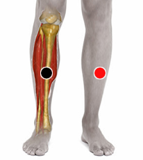

Pytirosporum Versicolor
Par
tibia- tibia

Generalidades:
Pitiriasis versicolor, coloración rojiza en la piel común en costas y lugares calurosos. Hongo fluorescente con luz negra. Simula escarlatina o psoriasis, manchas en la piel, origina úlceras, moretones o cambios de coloración, común en diabéticos y mujeres, Ulcera varicosa.
El hongo del género Malazzesia forma parte de la flora normal de la piel. La infección forma manchas claras en la piel, por lo que puede confundirse con otras enfermedades como: vitiligo, tiñas, pitiriasis rosada o pitiriasis alba.
Transmisión
Se da con mayor frecuencia cuando hay exceso de humedad. Se puede usar champú anticaspa, dejándolo varios minutos para prevenir la infección. Usar ropa que permita la transpiración.